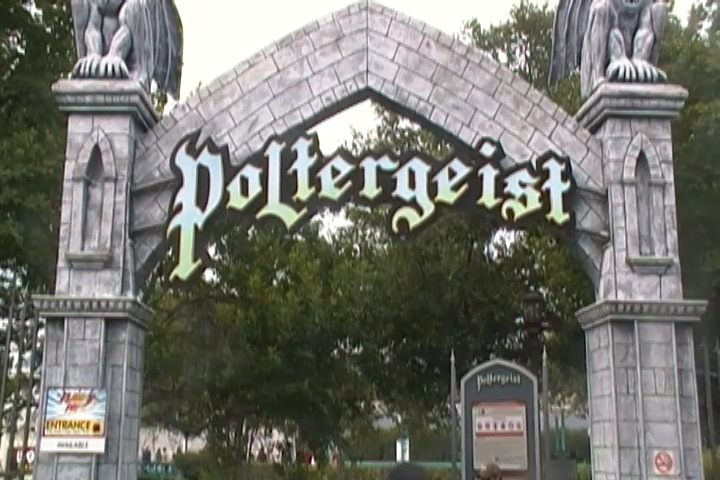

| |
Poltergeist Review

We're here at Six Flags Fiesta Texas. Today's coaster is a real interesting one for you guys. This is one of the Premier Spaghetti Bowls. Now most people don't think anything about these rides, but I'm just gonna be honest. I freaking love these rides. They're just so twisty, and dizzying, and disorienting. I LOVE THEM!!! LOVE THEM LOVE THEM LOVE THEM!!! So yeah. Let's not waste any more time. Ok, we're off!!! It's actually a decent launch. Not the best launch ever. But still. A very solid launch that's a ton of fun, spitting us into the twisty mess. And then with track all around us, we rise up, and flip upsidedown into a Cobra Roll. With all the track around us, it's hard to see where we're going and what's going on. But yeah. We flip upsidedown, head out, flip upsidedown again, and dive back down into the twisted mess. And then we rise on up again, flipping upsidedown into a sidewinder. SWEET!!! I love all the twistiness and the disorientation. And yeah. At this point, we go through a couple of random turns up ahead. I will admit, this is the breather point of the ride. We lost a lot of our speed thanks to that sidewinder, and most of the twisted mess is below us, rather than above us. So we're just sort of turning and meandering at this point in the ride. Almost as if we were lost. Don't worry. We soon will be. =) We head around a small dip, and through a little straight track. Now this may seem random, but be thankful for that straight track. Be very thankful for it. For you see, on the Flight of Fear clones (Which are both clones of Poltergeist), this is where the midcourse brakes are. And on those rides, the midcourse brakes are STRONG!!! But on Poltergeist, NO TRIM BRAKES!!! That straight track is where they're supposed to be. But instead, we just get a bit of straight track before we twist into the real dizziness. YAY!!! Now the fun is really about to begin. =) We head down a couple small spiral drops, and thanks to the speed we already have, this just lays it on and lays it on thick. We then head around a swooping turn, circling all the twistiness and madness, before a sharp turn, and it has some laterals. WOW!!! We then just continue to dip on down, gaining more and more speed as we go around more and more turns, getting crazier and crazier. Eventually, after a couple more turns, before heading into the corkscrew. At this point, we're going really freaking fast now, and our bodies are just used to heading around and around and around at this point. So when we do barrel on through that corkscrew, it's quite a surprise and incredibly disorienting. "WOAH!! WTF!!?" is pretty much all your thinking. And then, we get spit out of the twisted mess, rise up a small hill, gain a tiny amount of floater air, and cruise on into the brake run. WOW!!! Just WOW!!! I know people don't really think much about this ride. But I love it. I absolutely love it. Hell, it might just gain a spot on our Top 10 Underrated Coasters List. So definetly make sure you give it a ride when you visit Six Flags Fiesta Texas. You will not be dissapointed.
8/10
Location: Six Flags Fiesta Texas
Opened: 1999
Built by: Premier
Last Ridden: July 16, 2013
I have ridden this exact same ride at the following parks.
Kings Dominion
Kings Island
Six Flags America
Poltergeist Photos



Home
|